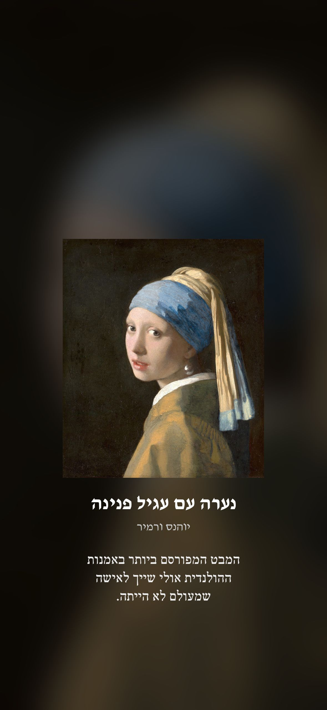
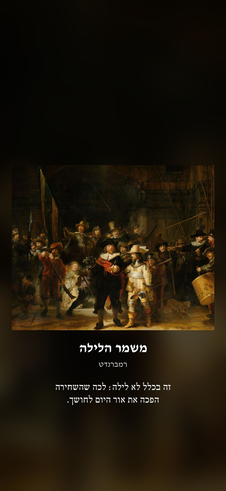
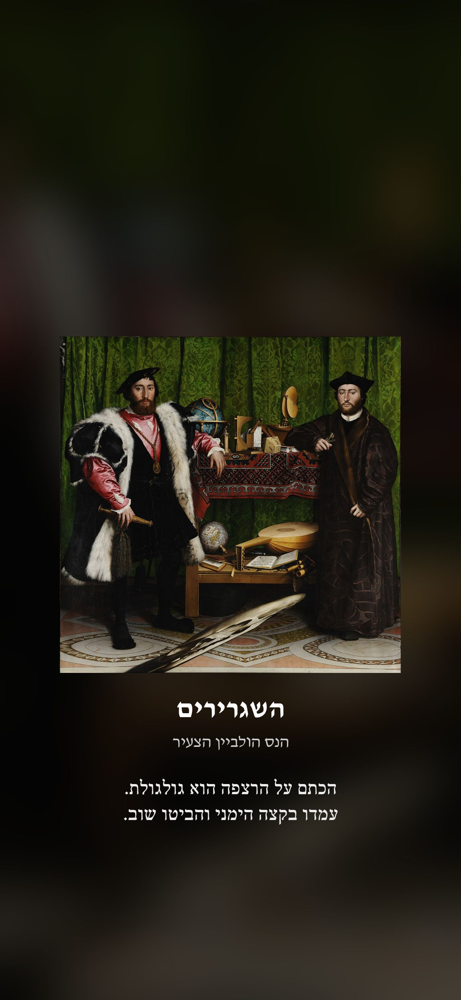

Genius Gallery לאייפון
יצירת מופת, צילום מהחלל או רעיון גדול על מסך הנעילה, עם שורה אחת שגורמת להסתכל פעמיים. באייפון אין צורך באפליקציה: אפליקציית "קיצורים" של אפל, שכבר מותקנת אצלכם, מחליפה את התמונה לבד.



שלב 1: בונים את הקיצור (פעם אחת, כשתי דקות)
פותחים את אפליקציית קיצורים (Shortcuts), לוחצים + ומוסיפים את הפעולות האלה לפי הסדר. השמות כאן באנגלית, כי כך הם מופיעים ברוב המכשירים. אם האייפון בעברית, מחפשים את הפעולה לפי המילה המודגשת.
https://geniusgallery.app/ios/config.jsoncount מתוך התוצאה הקודמת.1 לבין הערך מהשלב הקודם.https://geniusgallery.app/ios/he/, ומיד אחריה המשתנה Random Number ואז .jpg. לאנגלית מחליפים את he ב-en.קוראים לקיצור Genius Gallery ושומרים. לחיצה עליו עכשיו כבר מחליפה את מסך הנעילה. כדאי לנסות.
טיפ: אם הפעולה האחרונה לא משנה את מסך הנעילה, בוחרים קודם בהגדרות טפט מסוג "תמונה" (Photo), ומריצים שוב.
שלב 2: שיתחלף לבד
בלשונית אוטומציה (Automation) לוחצים + ובוחרים מתי להריץ את הקיצור. ההמלצה שלנו:
- כשפותחים אפליקציה שמשתמשים בה הרבה (App), למשל וואטסאפ או אינסטגרם. בפעם הבאה שנועלים, מחכה יצירה חדשה.
- או בשעות קבועות (Time of Day), למשל בבוקר, בצהריים ובערב.
בוחרים Run Immediately (להריץ מיד, בלי לשאול), ומכבים את ההתראה על כל ריצה אם היא מופיעה. בסוף בוחרים בקיצור Genius Gallery.
מה זה עושה, ומה לא
הקיצור מוריד בכל ריצה תמונה אחת מהאתר שלנו ומציב אותה כמסך הנעילה. הוא לא אוסף שום מידע ולא צריך חשבון. אפל לא מאפשרת להחליף טפט בכל פתיחת נעילה, ולכן ההחלפה קורית לפי האוטומציה שבחרתם. באנדרואיד יש אפליקציה מלאה שמחליפה בכל פתיחה: Genius Gallery ב-Google Play.
English: Genius Gallery on iPhone
A masterpiece or a big idea on your iPhone lock screen, with one line that makes you look twice. No app needed: Apple's Shortcuts app sets it for you.
1. Build the shortcut (once, about two minutes). In Shortcuts, tap + and add, in order:
- Get Contents of URL:
https://geniusgallery.app/ios/config.json - Get Dictionary Value: the value for
count. - Random Number between
1and that value. - Text:
https://geniusgallery.app/ios/en/+ Random Number +.jpg - Get Contents of URL with that Text.
- Set Wallpaper Photo on the Lock Screen, with Show Preview and Crop to Subject off.
Name it Genius Gallery. Tapping it now already changes your lock screen.
2. Make it automatic. In Automation, tap + and pick when it runs: when you open an app you use a lot (WhatsApp, Instagram), or at set times. Choose Run Immediately and select the Genius Gallery shortcut.
The shortcut downloads one image from our site each time. It collects nothing and needs no account. On Android there is a full app that changes the work on every unlock: Genius Gallery on Google Play.